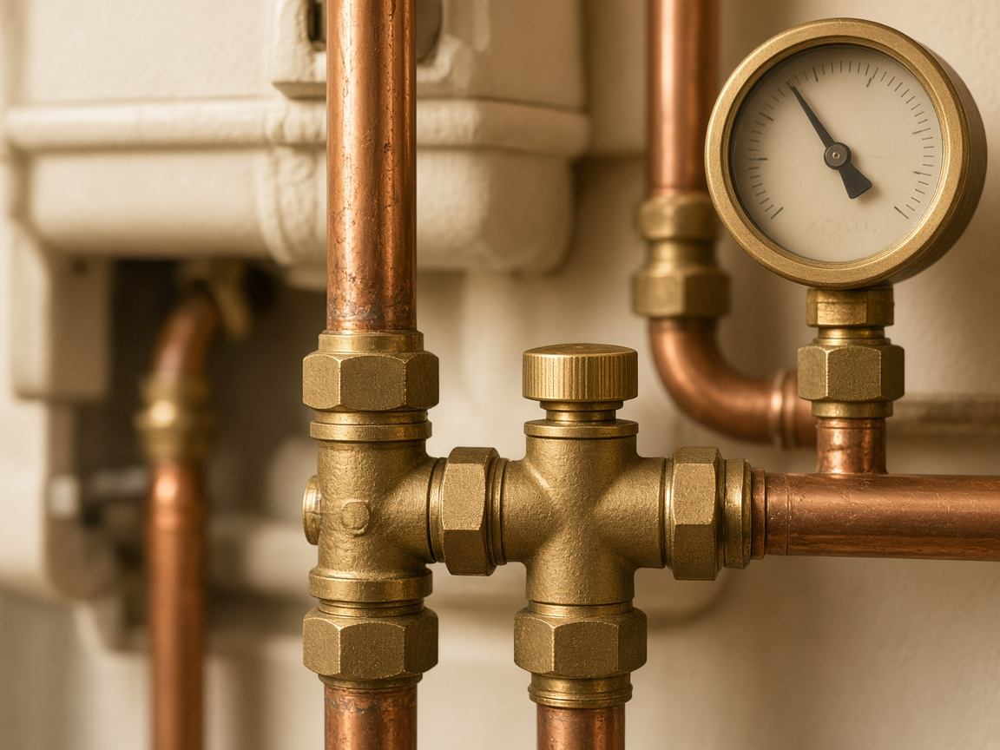
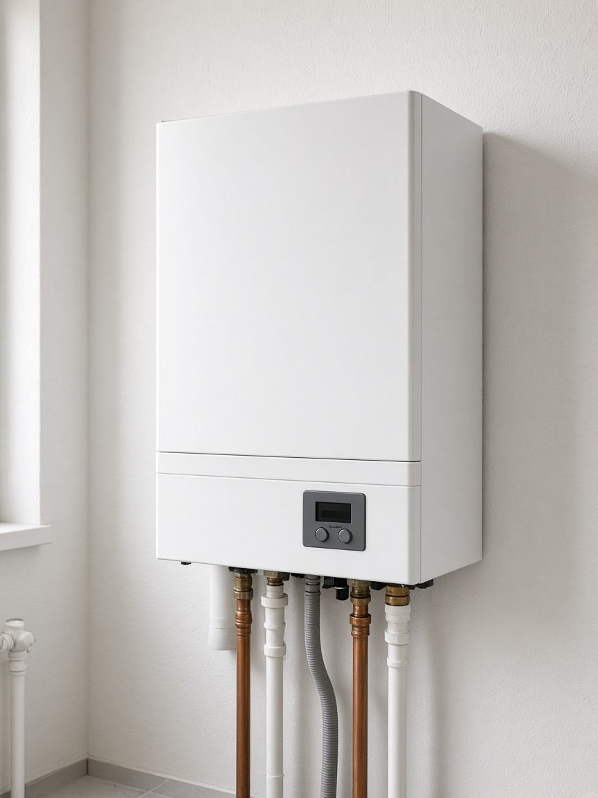

Heating system installation
We fit gas and electric boilers and connect them to the household heating installation. We agree a visit, prepare the connections and commission the appliance.
Authorised service for Vaillant • Protherm • Bosch
Stop breakdowns early and keep the heating safe. Report a problem online in a few clicks, or use the short self-help guide before you call.
Urgent call-out (gas or water leak)?
Call now: 060 300 5900First line of defence
Before you call, check the 4 most common reasons the heating will not run. In many cases a visit is not needed.
Look at the gauge on the boiler (an analogue needle or a digital display). If the pressure is below 1.0 bar (it often flashes or sits in the red zone), the system does not have enough water.
This is the most common problem at the start of the heating season. The thermostat looks as if it works, but it does not have enough power to send a signal to the boiler.
The lockout comes from a brief drop in gas pressure, a power cut, or air in the system.
Air has collected in the radiator and stops hot water circulating in the upper part.
Fill in the report below. WhatsApp opens with the message ready to send.
Quick, no waiting
Fill in the short form. The details are turned into a message and WhatsApp opens, where you can also attach a photo of the display.
Services
The business installs and services heating systems, gas boilers and electric boilers. Call to arrange a visit.
We fit gas and electric boilers and connect them to the household heating installation. We agree a visit, prepare the connections and commission the appliance.
When a boiler will not heat, loses pressure or shows a fault, we inspect it, clean it, adjust it and replace a part when that is required. For wall-hung gas boiler service in Požarevac, call Fluid 012.
We maintain and repair electric boilers: heating elements, controls, circulation and safety devices, so the heating stays reliable.
A check before the heating season reduces a mid-winter breakdown. We look at combustion, seals, pressure and the circulation pump, following the manufacturer’s guidance.
Smart prevention
Don't wait for the first frost and a full November diary. A regular service extends the life of the boiler and lowers gas use.
Recommended
May – September
October – December
We still come out during the season, in the order requests arrive, but booking ahead is the better plan.

Vaillant · Protherm · Bosch
Repairs use parts from the manufacturers whose boilers we service. Their official websites are below.
Manufacturer sitesNo compromise on safety
As an authorised service partner, we diagnose faults and fit factory parts to the manufacturer’s standards.
Authorised technician
Full servicing, electronics diagnosis and fitting of original Vaillant spare parts.
Certified partner
Reliable service of Protherm gas and electric boilers, with fast supply of original components.
Authorised service
Maintenance and repair of Bosch heating systems, during and after the manufacturer’s warranty.
Factory components only
The fault is identified on site
Safe, reliable work
The business
Fluid 012 s.z.r. is a heating service and a sole proprietorship. The owner is Aleksandar Aleksić PR, registered for heating-system installation. The address is Ratarska 177, Požarevac.
The business installs, maintains and services heating systems, gas boilers and electric boilers. For Vaillant, Protherm and Bosch, Fluid 012 is an authorised service.

Questions
Fluid 012 installs, maintains and services heating systems, gas boilers and electric boilers. It is an authorised service for Vaillant, Protherm and Bosch.
Ratarska 177, 12000 Požarevac, Serbia.
Fill in the report. WhatsApp opens on 060 300 5900 with the message ready to send. You can also call 012 751 6126, 060 300 5900 or 060 300 5899.
Yes. The business installs and services heating systems, gas boilers and electric boilers.
Original spare parts from Vaillant, Protherm and Bosch. Official pages are in the Brands section.
Contact